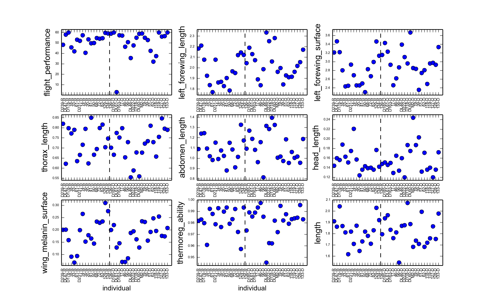
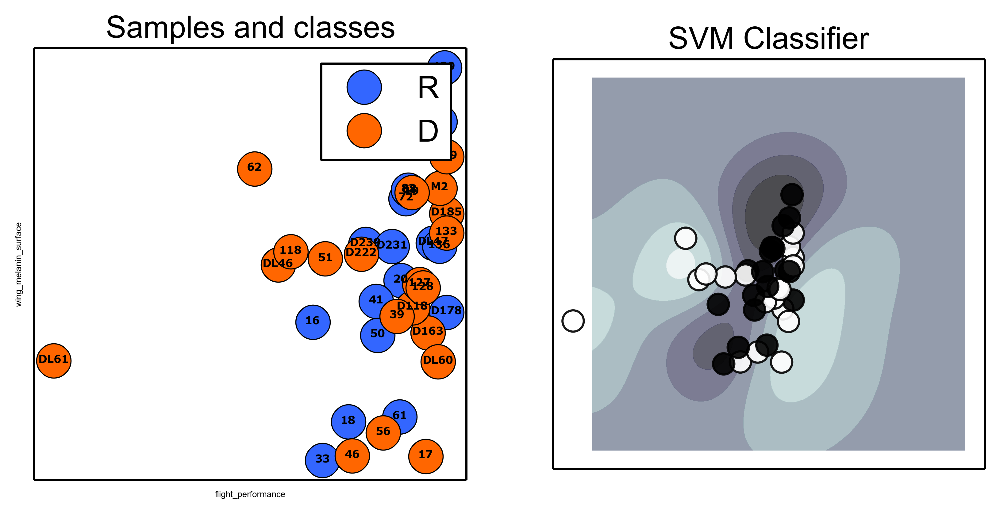

Meta-data analysis¶
First, we summarize the measurement co-variates for the experiment. Then using a support vector machine and a basic univariate method we rank the features based on how well they predict the disperser - resident phenotype. Given the most informative criteria we are interested in how the individual butterflies naturally group themselves.
Data summary¶
The meta-data or data associated with the individuals are summarized in the following figure.
{kind=link}
Predicting phenotype¶
To investigate whether there are features that are predictive of the resident and disperser phenotype we first perform feature selection
to identify the most informative features.
{kind=link}
If we rank the features based on the sum of the two criteria:
thorax_length0.73,1.0,1.73abdomen_length0.94,0.46,1.4thermoreg_ability1.0,0.24,1.24head_length0.2,0.35,0.55flight_performance0.25,0.21,0.46length0.44,0.01,0.46left_forewing_surface0.07,0.13,0.2left_forewing_length0.18,0.0,0.18wing_melanin_surface0.03,0.03,0.06
We see that movement phenotype.
Support vector machine to test predictive features.¶
We constructed a support vector machine model to compare different features based on how well they predict the phenotype. Shown in the image below is the model trained on only the two most informative features.
{kind=link}
Finally we used the f1-score as a metric to further investigate the features predictive abilities.
The samples
‘DL46’ ‘D222’ ‘D239’ ‘D231’ ‘DL47’ ‘D185’ ‘DL61’ ‘D118’ ‘D163’ ‘DL60’ ‘D178’ ‘M2’ ‘14’ ‘16’ ‘17’ ‘18’ ‘19’ ‘20’ ‘33’ ‘39’ ‘41’ ‘46’ ‘50’ ‘51’ ‘56’ ‘61’ ‘62’ ‘68’ ‘72’ ‘83’ ‘118’ ‘119’ ‘127’ ‘128’ ‘129’ ‘133’ ‘134’ ‘136’
0.808 length, thermoreg_ability
D D R R R D D D D D R R D D R D R D D R D R D R R D R D D D R R R R D R D D
y 1 1 0 0 0 1 1 1 1 1 0 0 1 1 0 1 0 1 1 0 1 0 1 0 0 1 0 1 1 1 0 0 0 0 1 0 1 1
yp 1 1 1 1 1 1 1 1 1 1 0 0 1 1 1 1 1 1 1 0 1 1 1 1 0 1 0 1 1 1 0 0 1 1 1 1 1 1
0.784 head_length, thermoreg_ability 0.741 length, head_length 0.778 length, thermoreg_ability, flight_performance 0.755 length, thermoreg_ability, head_length 0.784 length, thermoreg_ability, head_length, flight_performance